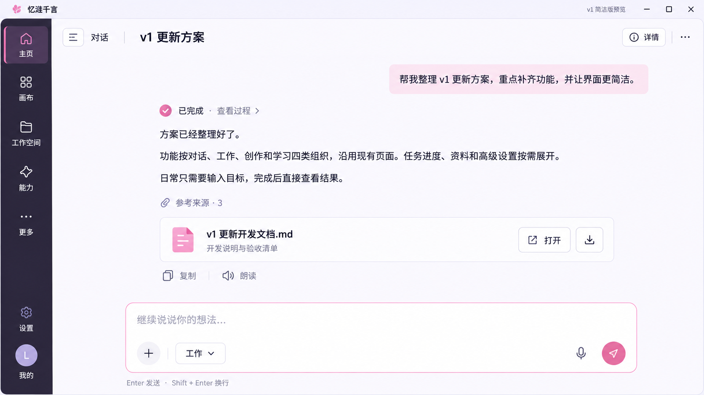

忆涟千言 · v1 页面预览
完整功能，按需展开 · R2 / 20 张页面图
概念设计 · 非运行截图
01 简洁对话主页
02 消息画布
03 工作空间
04 空间详情与代码协作
05 能力中心
06 智能体与角色
07 记忆
08 知识库
09 设置画布
10 监控
11 日志
12 账号与隐私
13 首次配置
14 更多功能
15 插件功能页
16 定时任务
17 资料学习
18 创作与成果
19 语音通话
20 外部消息渠道
简洁对话主页
消息画布
工作空间
空间详情与代码协作
能力中心
智能体与角色
记忆
知识库
设置画布
监控
日志
账号与隐私
首次配置
更多功能
插件功能页
定时任务
资料学习
创作与成果
语音通话
外部消息渠道
上一页
下一页
查看原图 ↗
